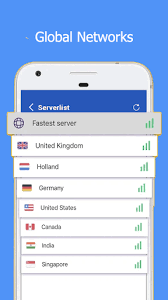
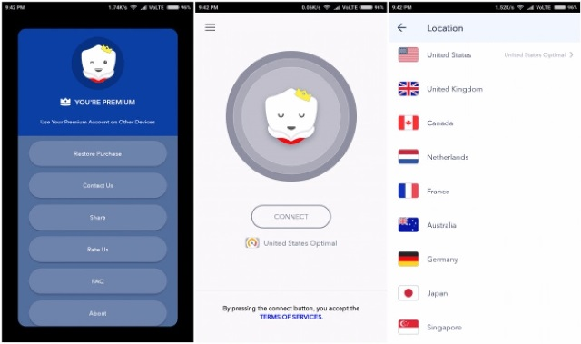
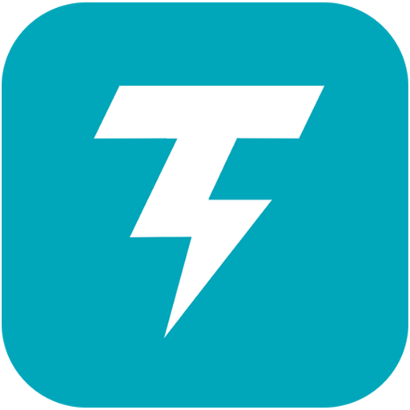

5 Best VPN's For Android.
Why should we use a vpn ?
"We all use internet every day its a part of our life but how secure is your connection when you're browsing through web pages or using a public wifi you never know, using a vpn or Virtual Private Network, allows you to create a secure connection to another network over the Internet. VPNs can be used to access region-restricted websites, shield your browsing activity from prying eyes on public Wi-Fi, and more.
But there are enough vpn apps on play store to get you confused dont worry i got ur back, here are the 5 best Vpns for Android to secure your connection."
Note : all the links provided are modified apks so that you can enjoy ad free interfaces.
1.Barando Vpn
- Endless list of countries to connect to worldwide!
- Simple one click to connect.
- Super fast speed proxy.
- Proxy any apps and sites in any country.
- IP vanish/ IP Fake.
- Hotspot VPN.
Barando vpn is the best vpn out there and it is so underrated.
+ Fast
+ Easy To Use Interference
+ Large List Of Servers To connect
BetterNet Vpn
- Incognito Browsing: using a VPN you don’t even have to install any incognito browser Simply turn on your VPN and all of your Internet traffic is completely encrypted. Your online activities are completely anonymous
- Wifi Safety: because all your online traffic is encrypted through a VPN, whatever public WiFi hotspot you are trying to access, you will be shielded from public Wifi risks and enjoy complete Wifi security
- Location Spoofer: VPN hides your IP address so that your location is masked and you are able to bypass geo-restrictions to access any content anywhere
+ Fast
+ Good Performance
- Not The Best Interface To Use
Thunder Vpn
- Large number of servers, high-speed bandwidth
- Choose apps which using VPN (Android 5.0+ required)
- Works with Wi-Fi, LTE/4G, 3G and all mobile data carriers
- Strict no-logging policy
- Well-designed UI, a few ADs
- No usage and time limit
- No registration or configuration required
- No additional permissions required
+ Speedy
+ Large number of servers
+ Smaller App Size
Secure Vpn
This vpn is from the same developer as thunder vpn so the features are exactly same except the app size is smaller at 3.7 mb
- Large number of servers, high-speed bandwid
- Choose apps which using VPN (Android 5.0+ required)
- Works with Wi-Fi, LTE/4G, 3G and all mobile data carriers
- Strict no-logging policy
- Smart choose server
- Well-designed UI, a few ADs
- No usage and time limit
- No registration or configuration required
- No additional permissions required
+ Speedy
+ Large number of servers
+ Smaller App Size
- Basic Interface
Turbo Vpn

- Fastest - Connect successfully as a hare with high VPN speed
- Easiest - One tap to connect to VPN proxy server
- Most Stable - Have lots of free cloud proxy server to provide better VPN service
- Turbo VPN – Free VPN proxy
- Bypass the firewalls as school free VPN proxy for school wifi and school computer
- Protect your network traffic under WiFi
- hotspot Browse anonymously and securely without being tracked
- Works with WiFi, LTE, 3G, and all mobile data carriers
- Encrypts data using OpenVPN protocols (UDP / TCP)
+ Fast
+ Huge List of Servers
- Interface
- Larger App Size